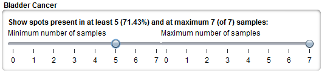
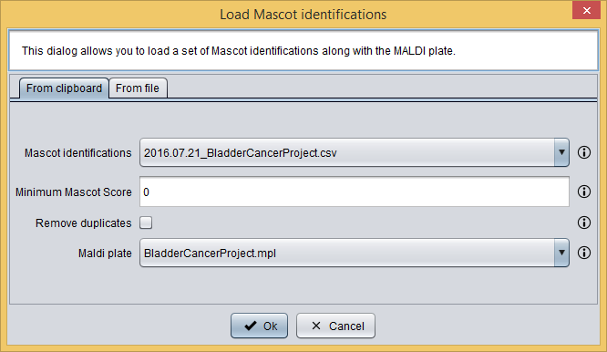
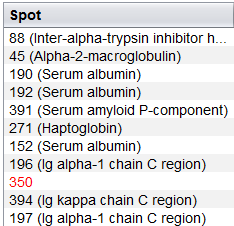
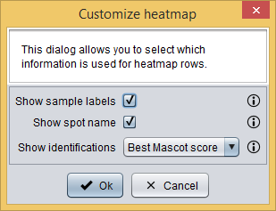
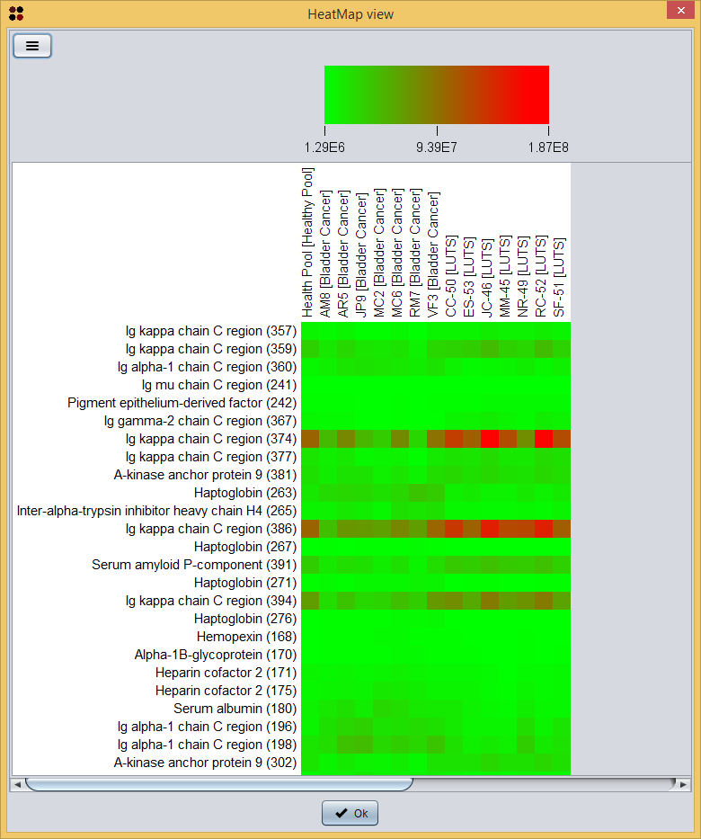
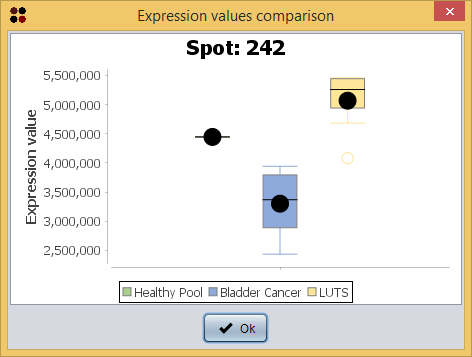
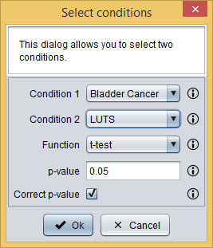

button and then selecting the View as heatmap option, which will show you a dialog to customize the heatmap visualization. As you can see in the image bellow, it requires you to provide the following information:
button and then selecting the View as heatmap option, which will show you a dialog to customize the heatmap visualization. As you can see in the image bellow, it requires you to provide the following information:Spots data can be explored using the Integrated analysis view.
Integrated analysis view
The Integrated analysis view has two main areas: the upper area with buttons and controls and the lower area with different views to explore spots data.
Integrated analysis view
(click in the image to enlarge)
The lower area has, at the same time, three tabs to explore spots data in different ways:
Buttons and controls
The upper area contains the following control buttons that allows you to accomplish different tasks:
Moreover, a presence filter is created for each condition in the upper area of this view. Regarding the Table view. This is usefuld to find spots that are present in one condition and not in the other at different percentages of presence. For example, the filter defined in the image below allows to look for spots that are in at least five of seven samples of the Bladder cancer condition.

Presence filter
Integrate Mascot identifications
In order to integrate Mascot identifications into this analysis you should click the button, which will show you the Add identifications dialog. As you can see in the following image, this dialog allows you to select a list of previously loaded Mascot identifications along with a MALDI plate.

Add identifications dialog
After adding this information to the analysis, tables will automatically show the best Mascot identification (i.e. that with a higher Mascot Score) along with the spot number or mark in red those spot without identifications associated

Table viewer with identifications
Heatmap visualization
You can visualize the spots data as a heatmap by clicking the button and then selecting the View as heatmap option, which will show you a dialog to customize the heatmap visualization. As you can see in the image bellow, it requires you to provide the following information:

Heatmap customization dialog
After clicking the Ok button the heatmap is shown in a new window.

Heatmap visualization
Conditions summary
The Conditions summary tab shows a summary of the conditions in the dataset with spots in rows and conditions in samples. For each spot, four columns are shown: average spot value, standard deviation, porcentage and count of samples where the spot is present.
Additionally, you can visualize a boxplot for each spot by doing double-click in a spot.

Spot boxplot
Finding differential spots
S2P allows you to find differential spots between conditions, that is: spots that have statistically different average values when two conditions are compared. This can be done by clicking the button, which will show you the following dialog. As you can see in the image bellow, it requires you to provide the following information:

Differential spots dialog
After clicking the Ok button, only those spots whose average mean is statistically different the compared conditions are shown in the table.